UEFA - União das Associações Europeias de Futebol

A UEFA é uma instituição de futebol filiada da FIFA. Representando as federações nacionais da Europa, organiza nove competições entre nações e quatro entre clubes do continente.
.
Federação Albanesa de Futebol (FSHF)
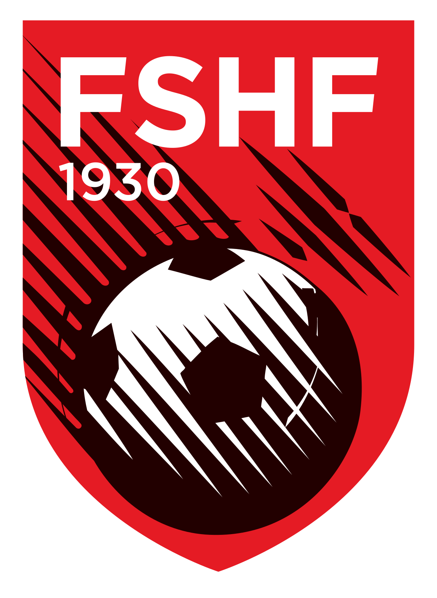Clubes da Albânia:
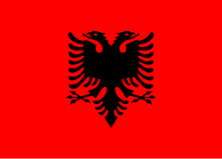Federação Alemã de Futebol (DFB)
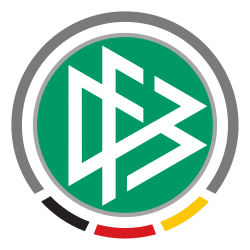Clubes da Alemanha:

Federação Andorrana de Futebol (FAF)
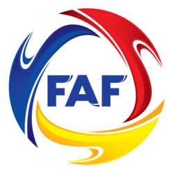Clubes do Andorra:
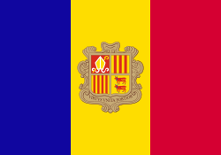Federação de Futebol da Armênia (FFA)
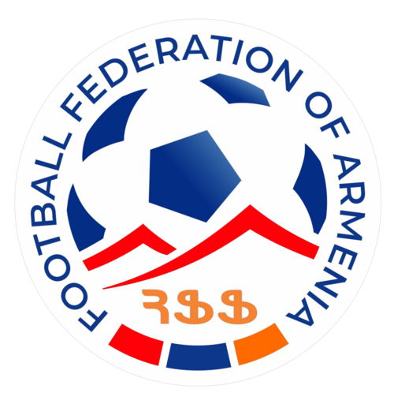Clubes da Armênia:

Federação Austríaca de Futebol (OFB)
Clubes da Áustria:

Associação das Federações de Futebol do Azerbaijão (AFFA)
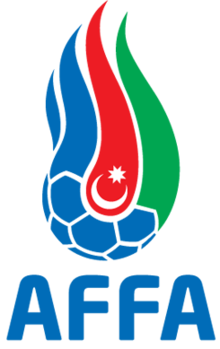Clubes do Azerbaijão:
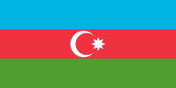
Clubes da Bélgica:
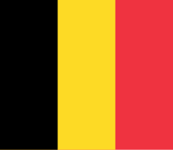Federação de Futebol da Bielorrússia (ABFF)
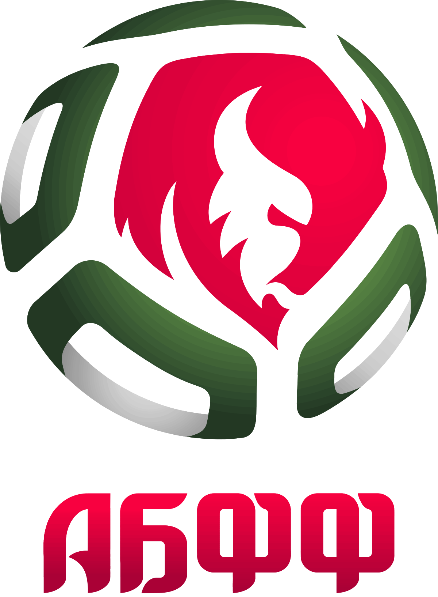Clubes da Bielorrússia:

Associação de Futebol da Bósnia e Herzegovina (FSBiH)
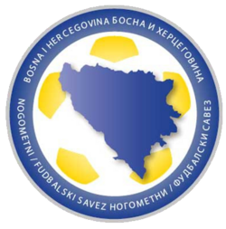Clubes da Bósnia e Herzegovina:
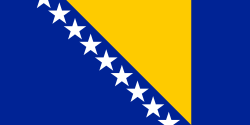
Clubes da Bulgária:

Federação de Futebol do Cazaquistão (KFF)
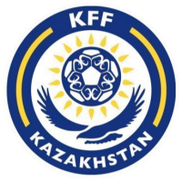Clubes do Cazaquistão:
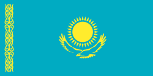Associação de Futebol do Chipre (CFA)
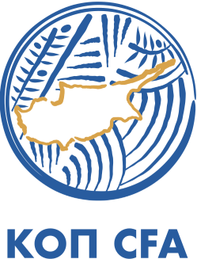Clubes do Chipre:


Clubes da Croácia:
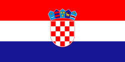Associação Dinamarquesa de Futebol (DBU)
Clubes da Dinamarca:
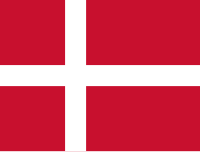Associação Escocesa de Futebol (SFA)
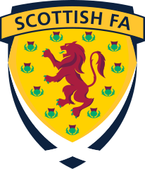Clubes da Escócia:
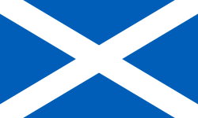Associação Eslovaca de Futebol (SFZ)
Clubes da Eslováquia:
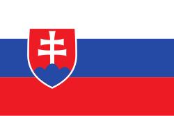
Clubes da Eslovênia:
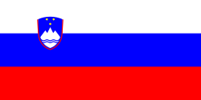Federação Espanhola de Futebol (RFEF)
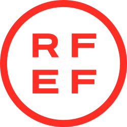Clubes da Espanha :


Associação Estoniana de Futebol (EJL)
Clubes da Estônia:

Associação de Futebol da Finlândia (FBF)
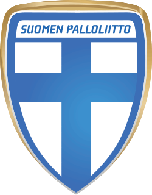Clubes da Finlândia:

Federação Francesa de Futebol (FFF)
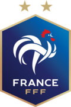Clubes da França:
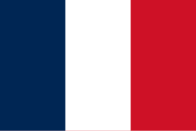Federação Georgiana de Futebol (GFF)
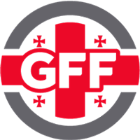Clubes da Geórgia:
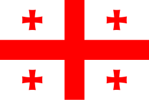Associação de Futebol de Gibraltar (GFA)
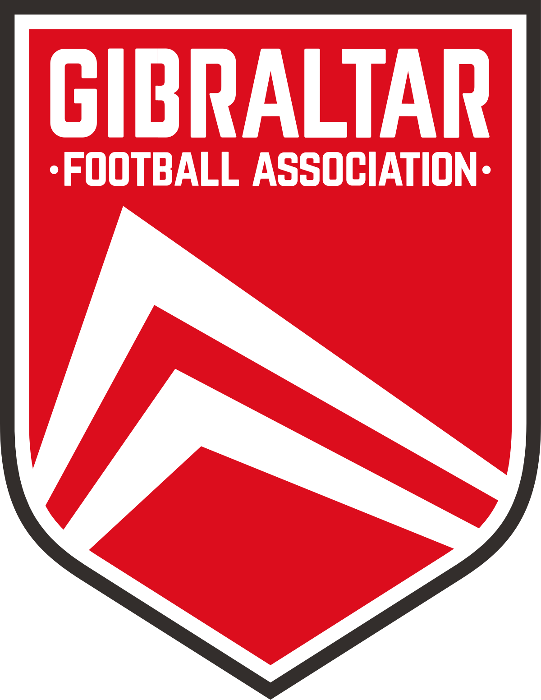Clubes do Gibraltar:
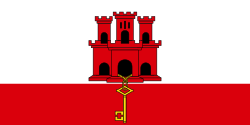Federação Helênica de Futebol (EPO)
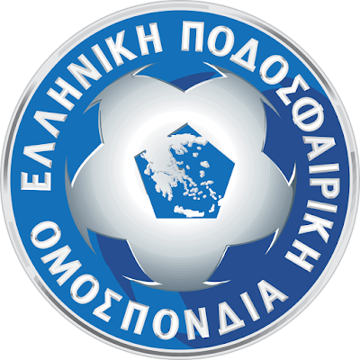Clubes da Grécia:
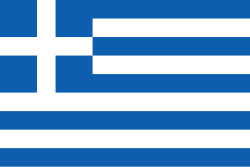Federação Húngara de Futebol (MLSZ)
Clubes da Hungria:

Associação de Futebol da Inglaterra (The FA)
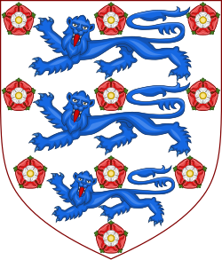Clubes da Inglaterra:
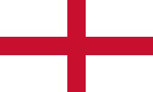Associação de Futebol da Irlanda (FAI)
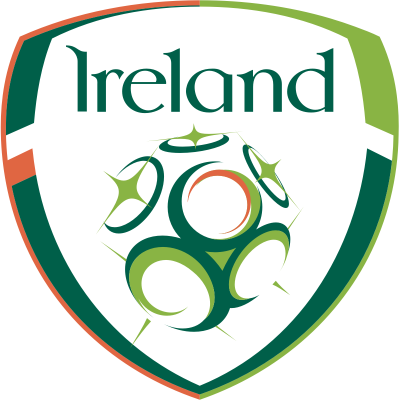Clubes da Irlanda:

Clubes da Irlanda do Norte:
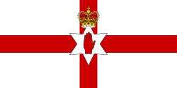Federação Islandesa de Futebol (KSI)
Clubes da Islândia:
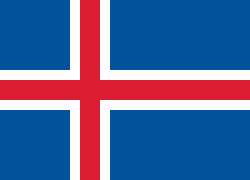
Clubes de Israel :
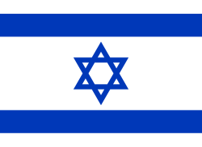Federação Italiana de Futebol (FIGC)
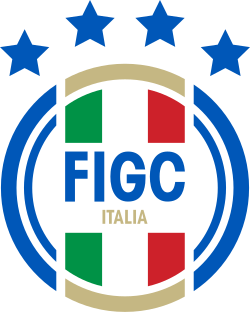Clubes da Itália:
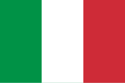Federação Kosovar de Futebol (FFK)
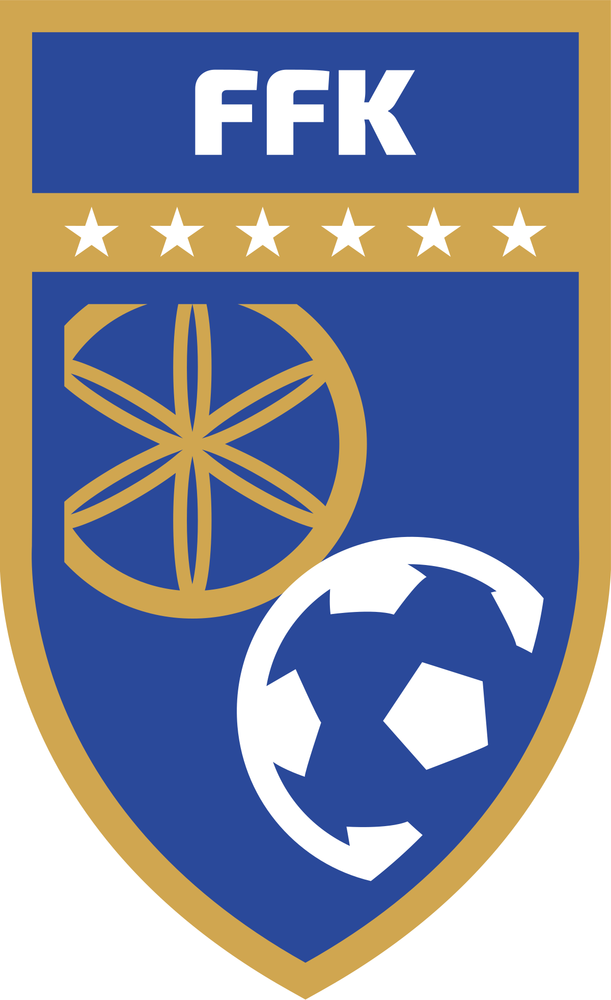Clubes do Kosovo :
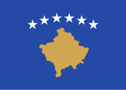
Clubes da Letônia:

Associação de Futebol de Liechtenstein (LFV)
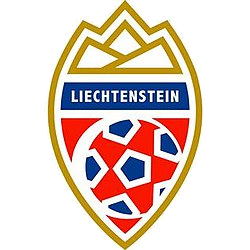Clubes do Liechtenstein:
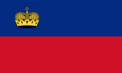Federação Lituana de Futebol (LFR)
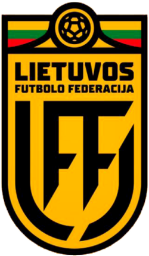Clubes do Lituânia:
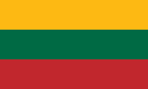Federação de Futebol de Luxemburgo (FLF)
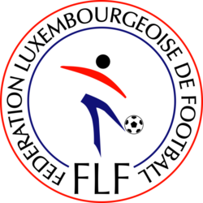Clubes do Luxemburgo:


Clubes da Ilhas Faroé:

Federação de Futebol da Macedônia do Norte (FFM)
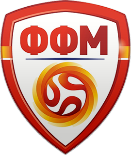Clubes da Macedônia do Norte:
Associação de Futebol de Malta (MFA)
Clubes do Malta:
Federação de Futebol da Moldávia (FMF)
Clubes da Moldávia:
Associação Montenegrina de Futebol (FSGC)
Clubes de Montenegro:
Associação Norueguesa de Futebol (NFF)
Clubes da Noruega:

Clubes do País de Gales:

Clubes dos Países Baixos (Holanda):
Associação Polonesa de Futebol (PZPN)
Clubes da Polônia:
Federação Portuguesa de Futebol (FPF)
Clubes de Portugal:

Associação de Futebol da Tcheca (FACR)
Clubes da República Tcheca: